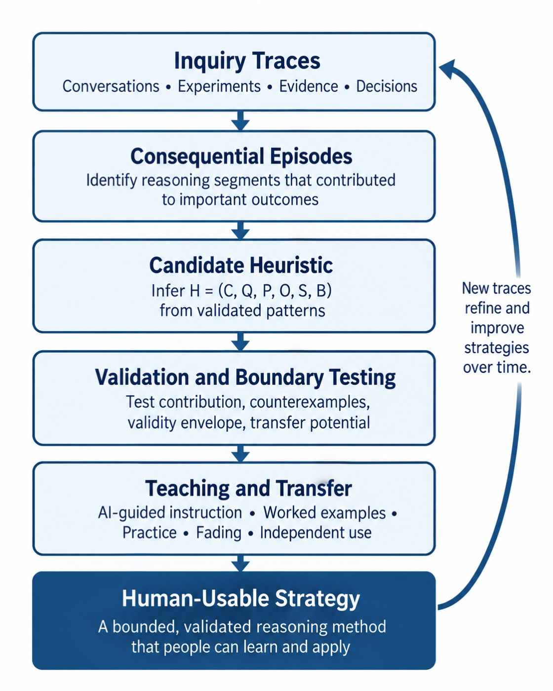

The book
Thinking Together
How Humans and AI Build Understanding Together. A 2026 manuscript by Paul Cummings, Ph.D.

The book is a proposal about human–AI inquiry. It argues for keeping human judgment in the work, and for using computation where evidence and uncertainty can still be inspected. A repeated inquiry should change what people learn to notice, question, test, and judge.

CoAgentics appears as one research instrument for making those ideas concrete. It is not the subject of the book. A working implementation is not evidence that the cognitive claims are true. Questions about calibration, transfer, learning, appropriate reliance, and later human judgment stay empirical: they require studies with people.
Two cases put that loop in a concrete setting. In the economics laboratory, AI agents observe prices and public information, submit orders, and are tested when the information, the auction, or the other agents change. That case is a Phase I research design, not a finished set of market results. Night Crossing, at Reagan National on January 29, 2025, is a distributed operational problem: geometry, timing, communications, and partial views have to be examined together, using only what each participant could plausibly have known at the time.


Figures from the manuscript



Where it starts
The manuscript opens with a conversation on a porch above a lake in New York. A middle-school educator, a mathematician working on national-security problems, and college students were each asking a different version of the same question: what should happen to human thinking when machines begin to participate in it?
The book does not answer that by dividing tasks between person and machine. It asks what kind of human thinking the relationship should produce. A person often begins with something small: a remembered pattern, a doubt, an unexpected connection. The next move is to open that recognition and ask what would support it, what would challenge it, and which alternatives deserve a test.
What the chapters do
-
1
From Human Cognition to Shared Inquiry
Human reasoning is selective. Experience changes what catches the eye, and fast recognition can compress years of practice or carry a systematic error. AI can keep alternatives available after working memory would have collapsed them. An intuition starts the inquiry. It is not the verdict.
-
2
A Mission Investigation
Communications weaken, partner aircraft report different things, and the mission window closes. The hard part is the gap between what happened, what the team saw, and what the team believed. A maneuver, a delay, a failing sensor, or several of those together can produce the same picture.
-
3
Inside the Loop: From Question to Evidence
A short question becomes explicit working state: mission context, visual focus, analytical focus, live hypotheses, current evidence, and a next test. Conversation can interpret the question. It does not hold analytical or decision authority.
-
4
Domain: Representing the Decision World
Before two parties can reason about the same situation, they need common referents. The Domain layer records what happened, when it was observed, when it became available, where it came from, and how much confidence the representation deserves.
-
5
Strategy: Representing What Could Be True or Done
The first plausible story can take over too quickly, especially when it arrives in polished language. Strategy keeps several explanations explicit and ties each one to evidence that could strengthen, weaken, or distinguish it.
-
6
Experiment: Learning by Controlled Comparison
Explanations become useful once the inquiry finds where they differ. A person can name the distinction that matters. The system can run the declared comparison. The result stays conditional on the scenario, the intervention, and the model.
-
7
Validation: What Are We Entitled to Believe?
A result can be precise and still be wrong, brittle, or irrelevant outside the conditions that produced it. Validation asks what the evidence has earned before a weak result is carried forward as settled knowledge.
-
8
Knowledge: What Should the System Remember?
The next question should not begin as if the relationship had no history. Knowledge here is an inspectable record outside the conversational model: claims, evidence, experiments, contradictions, provenance, qualifications, and their history.
-
9
The Human Workbench: A Place to Think
The other layers do not guarantee that a person can see or challenge the reasoning. The workbench is where someone can see what the system is attending to, redirect the inquiry, and carry evidence back into judgment.
-
10
When Human and Machine Disagree
Neither side gets automatic priority. A person may hold context, tacit knowledge, or a value judgment the representation lacks. The system may hold comparisons, records, or counterexamples the person has forgotten.
-
11
Learning to Think Together
Across cases, one sequence of checks may work better than another, or one question may consistently separate competing explanations. When that pattern can be understood, practiced, and adapted, it becomes a candidate human heuristic.
-
12
What We Carry Forward
Computational behavior becomes a human strategy only after four kinds of work: identify the useful pattern, formalize it, validate its boundaries, and teach it well enough that a person can reuse it.
-
13
The Strategy Knowledge Base
A working system accumulates many methods, some overlapping and some useful only under narrow conditions. The library has to keep the evidence visible, retrieve methods for a new situation, and teach from them without turning retrieval into authority.
-
14
Authority, Responsibility, and the Right to Disagree
Once analysis can influence action, evidence can reshape what a person believes, and a system can influence which evidence receives attention. Authority, responsibility, and the right to disagree have to stay explicit.
The conclusion returns to the porch. The relationship is the system. Inquiry can leave behind a reusable method as well as a result for the case at hand.
The back of the manuscript includes a glossary, notes, references, an architecture appendix, a subject index, and a note about the author.